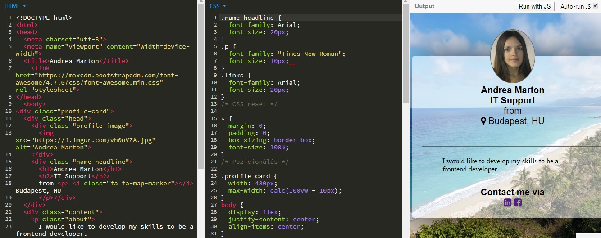
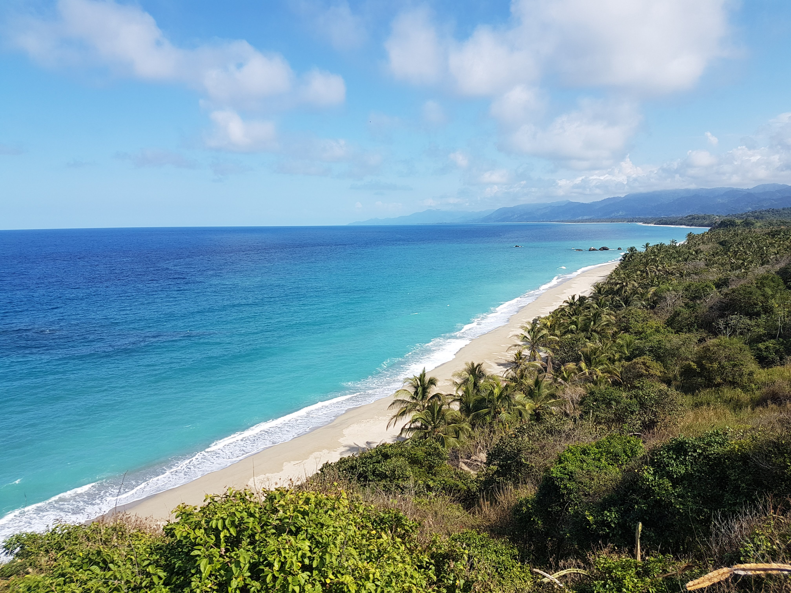

Karrier

Olyan ügyfélközpontú ember vagyok, aki karrierjét a pincérnőtől a CRM menedzserig fejlesztette az IT szektorban. Ezen az úton számos hasznos tapasztalatot szereztem mind a B2C, mind a B2B vállalkozásokban, valamint erős technikai készségeket fejlesztettem ki, többek között számos szállodai- és foglalási szoftver, SAP rendszer, My SQL, Trello használatával, funkcionális és kézi szoftver és alkalmazás teszteléssel.
Tanulás

Önmotivált ember vagyok, aki mindig új kihívásokat keres. Hiszek az egész életen át tartó tanulásban; ezért folyamatosan fejlesztem készségeimet. Jelenleg egy weblapkészitő tanfolyamon veszek részt, az új ismeretekkel weblapokat tervezek létrehozni jövőbeli ügyfeleim számára. Hét évet töltöttem Londonban, ahol nagyon élveztem dolgozni, élni és tanulni egy nemzetközi környezetben.
Utazó

Utazó alatt azt értem, hogy olyan utazásokat tervezek, szervezek és valósitok meg, ahol elmerülhetek a helyi, kulturális és természeti élményekben. Legutóbbi utazásom Kolumbiában volt, ahol volt szerencsém időt tölteni őslakos közösségekben, túrázni az Andokban és a Sierra Nevada de Santa Marta-ban, meglátogatni a kávéültetvényeket, a karibi tengerpartokatt, megismerkedni hihetetlen biodiverzitással az Amazonas esőerdőjében.
Hobbi

Hobbijaim elsősorban sportközpontúak, például úszás, kerékpározás és túrázás. Szabadidőm nagy részét a természetben töltöm. Szeretek fotózni és fotókönyveket készíteni.
Tanulmányok

College of North West London – London, Nagy Britannia
University of West Hungary – Győr, Magyarország
Vedd fel a kapcsolatot velem itt: